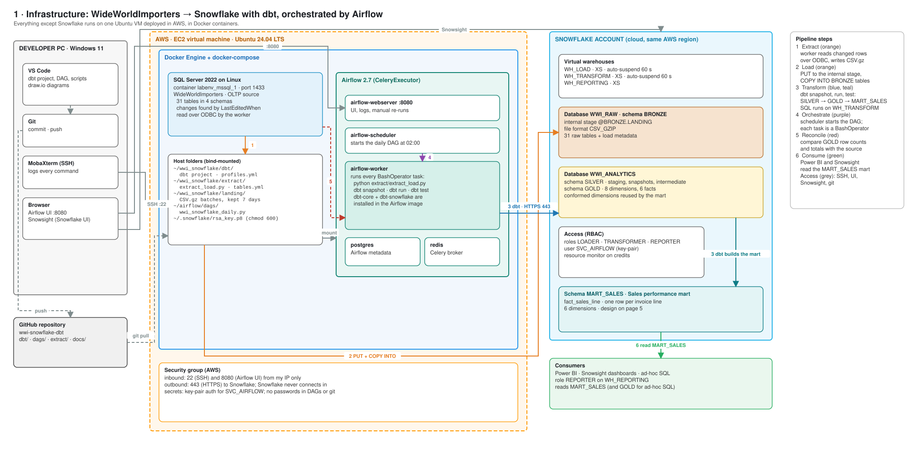
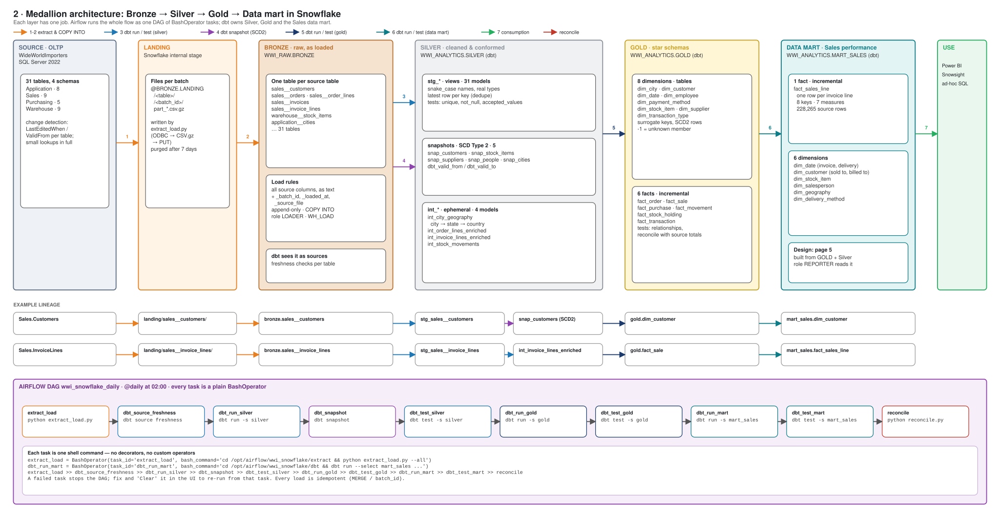
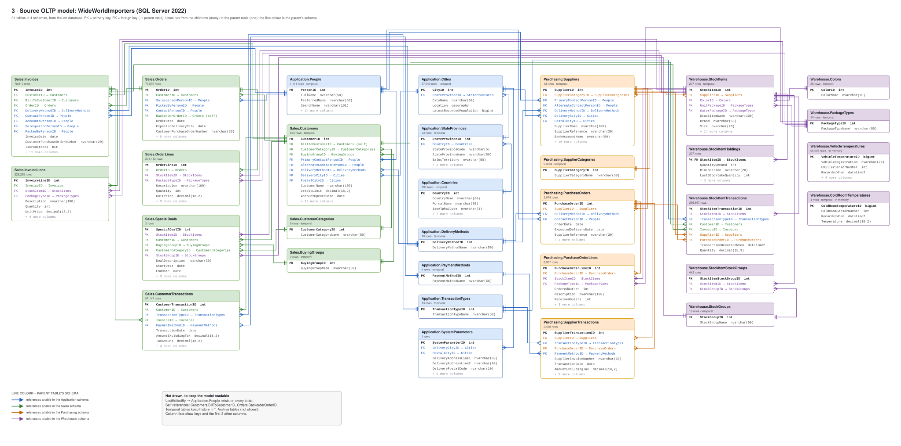
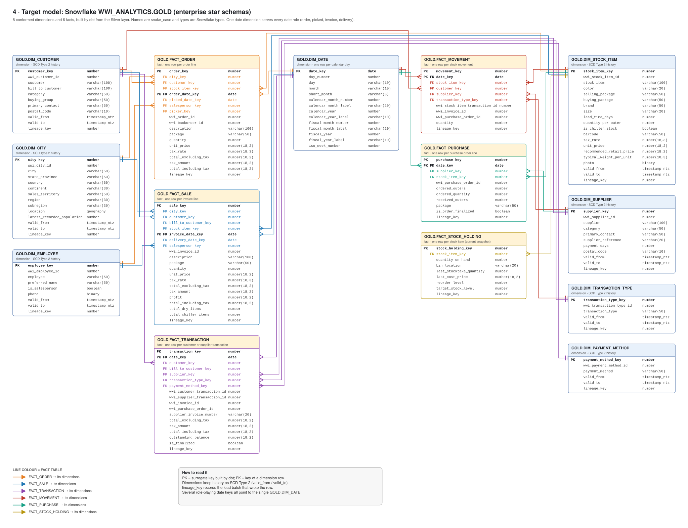
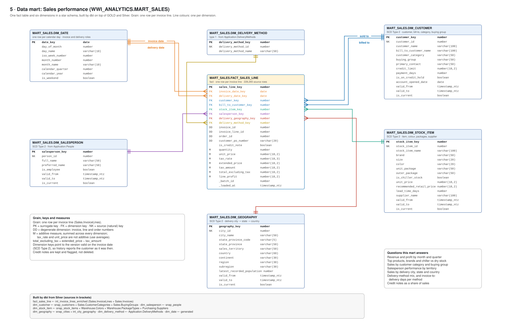

Chapter 0 · The Design
The Complete Design
Before a single line of code, here is the whole system on five pages. You don't need to understand every box yet: skim each diagram once, then come back whenever a later chapter mentions a part of it. Each diagram can be zoomed and opened in full screen.
How to read these diagrams comfortably
Use ⤢ Full screen on any diagram to see it at its full size; press Esc to come back. On a smaller screen, scroll the diagram sideways. Arrow colours always mean the same thing: orange is extract and load, blue is dbt building Silver, purple is dbt snapshots, navy is Gold, teal is the data mart, green is people using the data, red is reconciliation, and grey is access or task order.
1 · Infrastructure
Where everything runs. Your PC only edits files and opens SSH, the Airflow UI and Snowsight. One Ubuntu virtual machine in AWS runs SQL Server and Airflow in Docker containers. Snowflake is a separate cloud account; the VM only ever connects out to it over HTTPS.

2 · Medallion architecture
How data moves and changes, left to right: from the source tables, through files in a stage, into raw Bronze tables, cleaned and historised in Silver, modelled into Gold star schemas and served as the Sales data mart. The bottom band is the Airflow DAG that runs it all.

3 · The source model: WideWorldImporters
The 31 tables we load, in their four schemas, with every primary and foreign key read from the real database. Don't try to memorise it: Chapter 3 walks through the parts that matter, and the Sales schema is where most of the business happens.

4 · The Gold model
The enterprise star schemas dbt builds in WWI_ANALYTICS.GOLD: eight conformed dimensions shared by six facts. One date dimension serves every date role: order, picked, invoice and delivery dates all point to the same DIM_DATE.

5 · The Sales data mart
What report builders actually use: one fact table at the grain of an invoice line, surrounded by six dimensions in a classic star. Chapter 10 builds it and answers real business questions with it.

Keep in mind as you read on
- Each layer has one job: Bronze keeps what arrived, Silver cleans and historises, Gold models, the mart serves.
- The VM connects out to Snowflake; nothing connects in.
- Every Airflow task is one shell command you can also run by hand.
- The chapters follow the arrows, left to right.